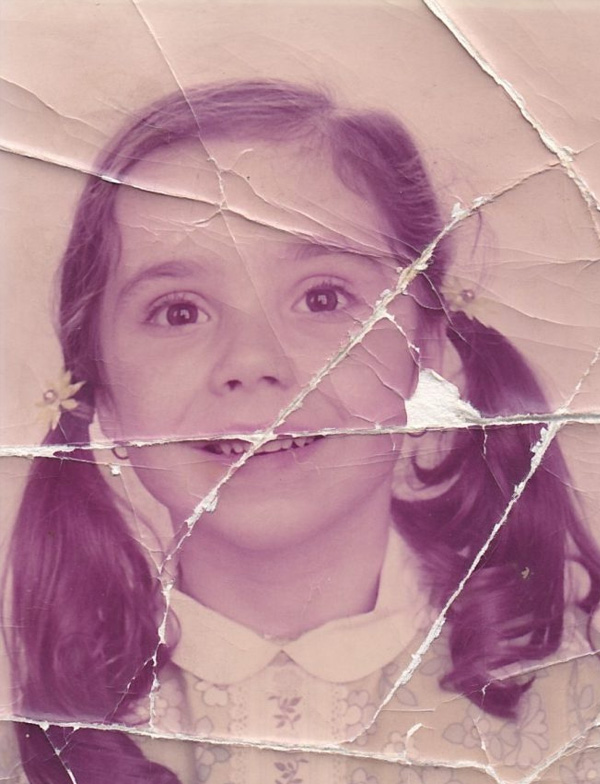
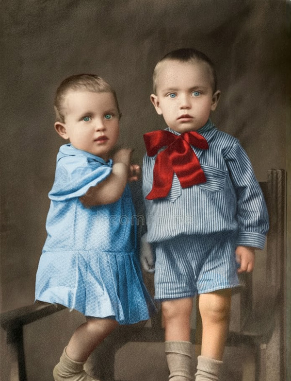
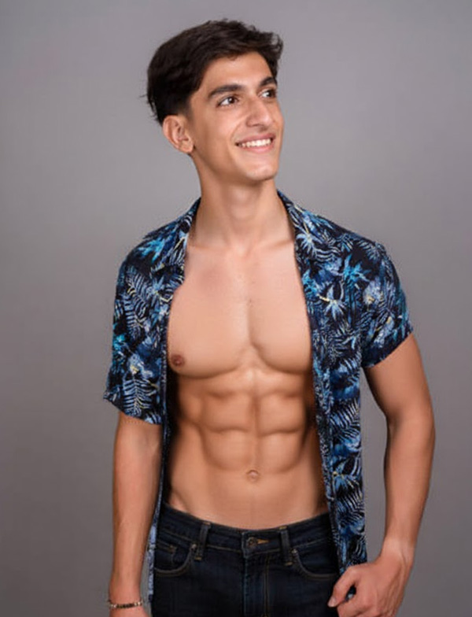
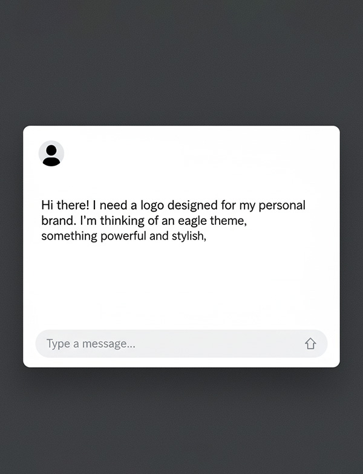

Interactive Before & After Studio
Drag or hover the comparison sliders on each showcase card below to inspect the non-destructive editing, edge feathering, and color grading.
Creative photo manipulation including seamless distraction removal, contextual background replacements, and surreal composite scene creation with realistic lighting and shadow integration.
Object Removal
Seamless removal of complex unwanted elements and background distractions with photorealistic texture synthesis.

Background Replacement
Complete environment replacement with matched depth-of-field, perspective vanishing points, and ambient bounce lighting.
Creative Composite
Blending multiple distinct photographic plates into unified, atmospheric scenes with seamless masking and grading.


Archival photo restoration reviving heavily degraded, scratched, or blurred photographs, recovering forgotten facial details and historic memories using modern digital darkroom techniques.
Photo Restoration
Rebuilding cracked emulations, dust tears, and paper creases while preserving authentic vintage grain structure.

Unblur & Clarity Recovery
Restoring sharp high-frequency edge definition and structural contrast to out-of-focus and low-resolution captures.


Color Restoration
Revitalizing sun-faded dye pigments and historic black-and-white plates with realistic skin tones and period-accurate colorization.


Editorial portrait and product retouching featuring frequency separation, micro-dodge-and-burn, blemish elimination, and precise anatomical contouring.
Exposure & Tone Balance
Recovering dynamic range in blown highlights and clipped shadows to produce balanced, luminous skin luminescence.


Editorial Skin Retouching
Frequency separation workflow removing blemishes, scars, and redness while preserving 100% natural pore texture.

Portrait & Body Contouring
Natural posture refinement and silhouette contouring executed with anatomical accuracy for confident commercial portraits.

Comprehensive graphic design and identity systems including vector monogram marks, commercial stationery superimposition, and custom digital promotional artwork.
Logo Identity Design
Distinctive monogram typography and geometry engineered to command authority across print and digital media.

Commercial Branding Systems
Cohesive brand packaging, business stationery, and collateral mockups tested against physical lighting environments.


Digital Artistry & Posters
Custom stylized promotional artwork, typography compositions, and social campaign graphics optimized for high engagement.


Adobe Certified Professional
Visual Design using Adobe Photoshop • Certiport VerifiedAdobe Certified Professional in Visual Design
Officially verified accreditation by Adobe Systems and Certiport. Demonstrates mastery in non-destructive image compositing, precision frequency separation, advanced mask manipulation, commercial color correction, and print/digital production standards.